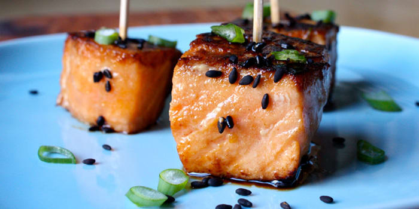

Teriyaki Salmon Bites

Description
These tasty teriyaki bites are perfect appetizers or served over rice for a mouth-watering meal.
Coated in a homemade teriyaki glaze and seasoned with scallions, these delicious Teriyaki Salmon Bites
are sure to become a regular dish in your home!
Ingredients
- ¼ Cup reduced-sodium soy sauce
- 2 Tbsp. water
- 1 thin slice of ginger, freshly chopped
- 1 Tbsp raw honey
- 1 lb. raw salmon, cut into 1-inch cubes
- 1 Tbsp. coconut oil
- 1 tsp. sesame seeds
- 1 green onion, thinly sliced (optional)
- Combine soy sauce, giner, garlic, and honey in a medium bowl; whisk to blend.
- Add salmon, toss gently to coat. Refrigerate, covered, for at least 1 hour.
- Heat oil in a medium sacepan over medium heat.
- Pleace salmon in an even layer in saucepan. Cook for 2 minutes, turn each salmon cube, cook
for an additional 1 to 2 minutes, or until salmon flakes easily when tested with a fork.
- Place salmon on a serving plate. Sprinlle with sesame seeds and green onion (if desired). If serving as an appetizer,
insert a toothpick into each piece of salmon.